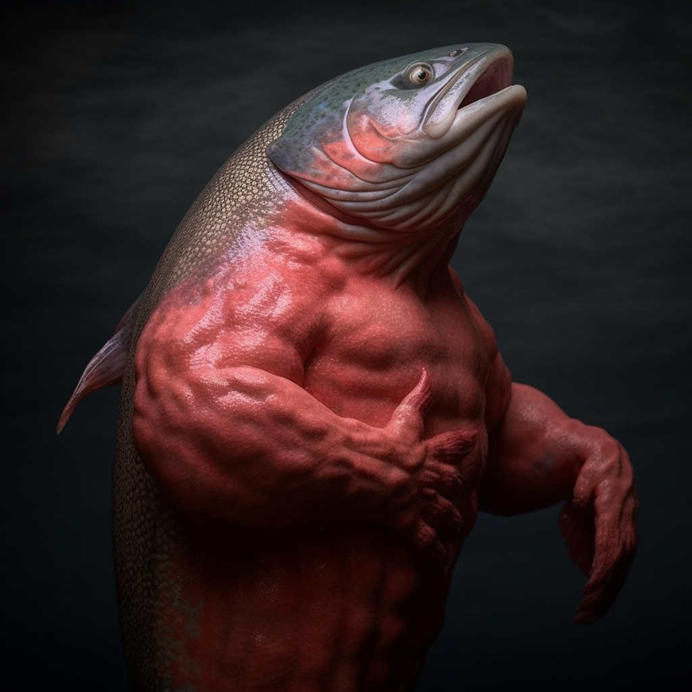

Salmon Farming 101
Water Clarity
Water clarity is important.
Clean water helps.
Breading Season
Breading seasons are crucial.
Diet and Excerise
Salmon require healthy diet and pushups regularly.
Fish Workout Plan

- Pushups: 10 repititions
- Warm up for 2 minutes
- Situps: 10 repititions
- Swimming: 10 strokes
Diet Plan
Health and Disease Management
Health and Disease management are essential.